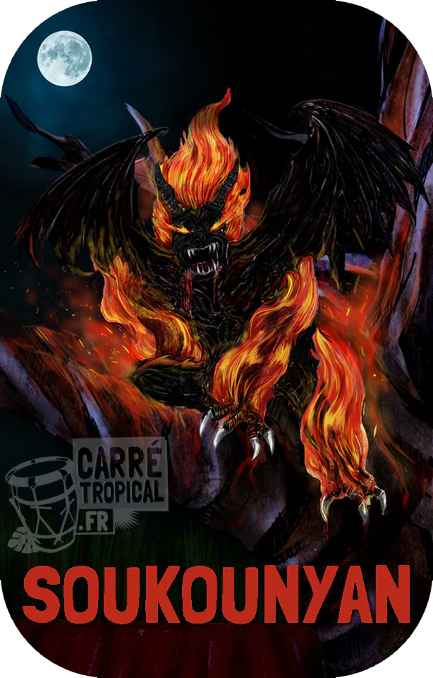

SOUKOUNIAN

La nuit tombée,il effectue un rituel de magie qui lui permet d'enlever sa peau humaine et se transformer en une bete de feu volante
Le soukounian a passer un pacte avec le diable. Sa peut etre une personne parmis nous qui, dans la nuit se transforme en soukounian et survole les champs de cannes à la recherche de sa victime dont il sucera le sang. Puis lorsqu'il fini, il se rend a son repère "Le Grand Fromager (monument naturel) pour y déposer sa peau humaine au Diable et apres s'envoler pour épier les gens dans leur maison et boire du jus dorange .